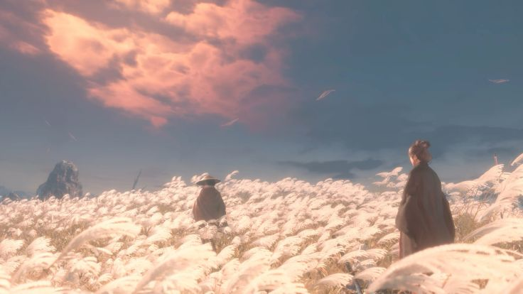

|  | |
| Sekiro: Shadows Die Twice представляет собой экшн-игру с видом от третьего лица; её действие происходит в феодальной Японии в период Сэнгоку | Игра схожа с Bloodborne, одной из предыдущих игр FromSoftware, и также содержит мрачный мир, гротескных врагов и сражения, в которых от игрока требуется больше нападать, чем защищаться. |